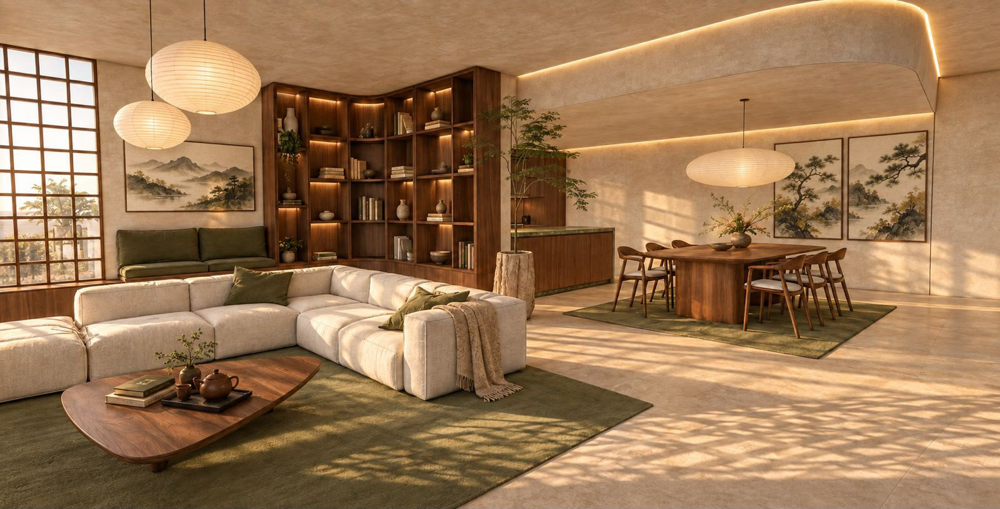
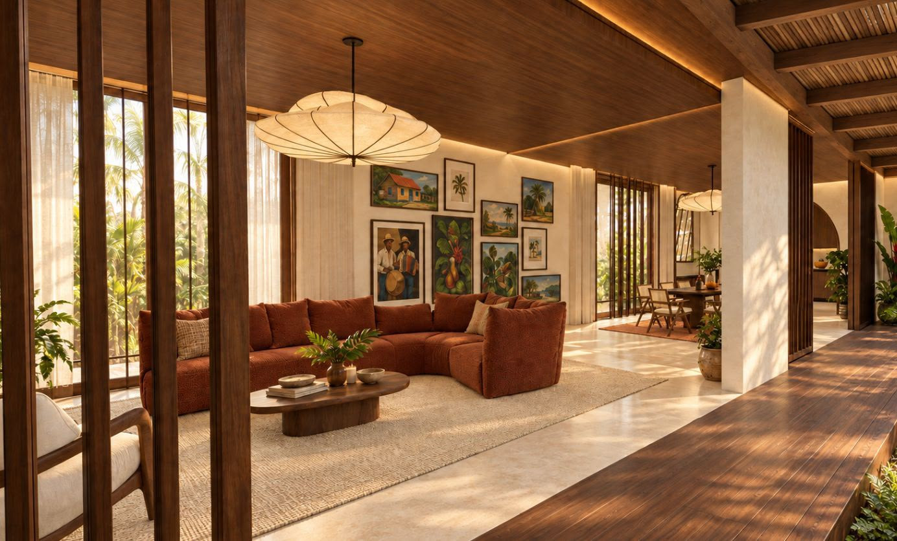
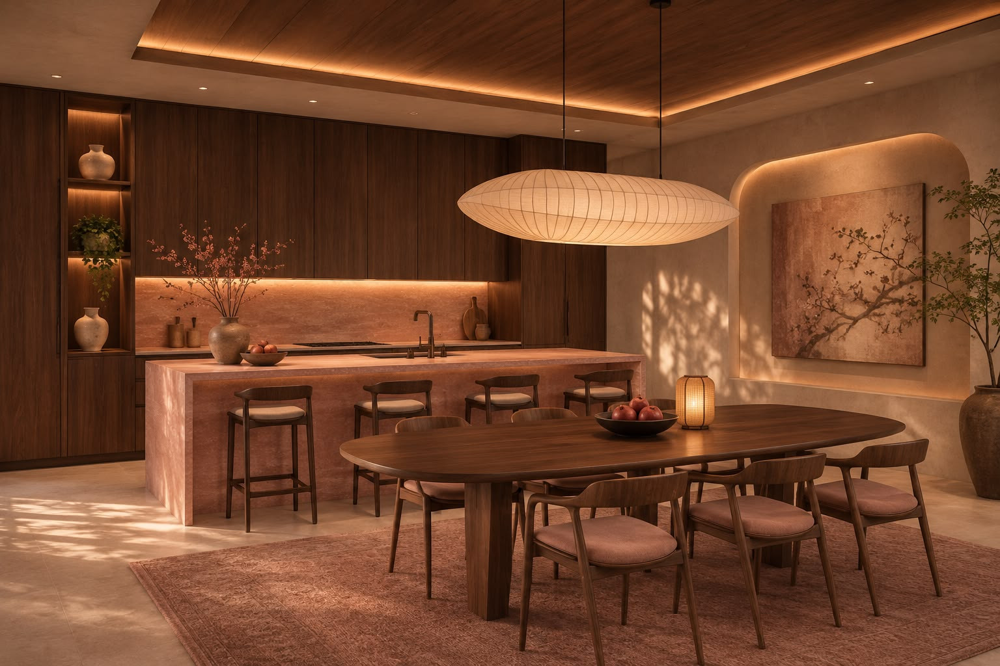
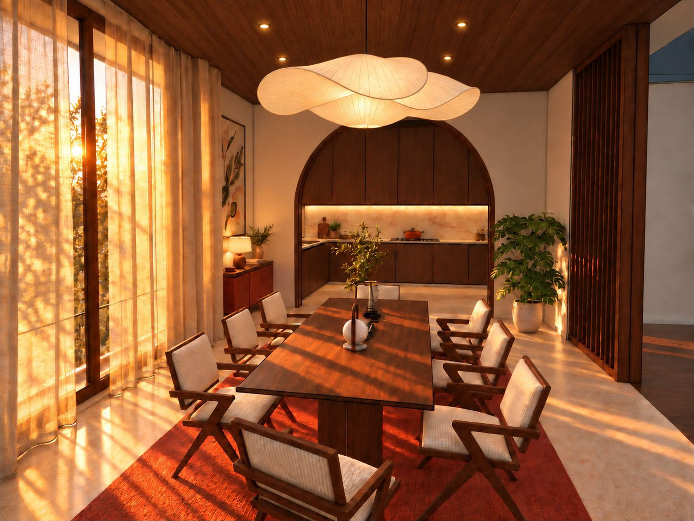

Timeless spaces with a character of their own
Interior architecture, spatial design and scenography. Each project begins with the people who will experience it.

Courtyard HouseLiving & dining Moonlit SuiteBedroom
Moonlit SuiteBedroom
Casa TropicalLiving room Courtyard HouseEntrance hall
Courtyard HouseEntrance hall
Courtyard HouseKitchen Moonlit SuiteView through the screen
Moonlit SuiteView through the screen
Casa TropicalDining room Courtyard HouseStudy
Courtyard HouseStudy